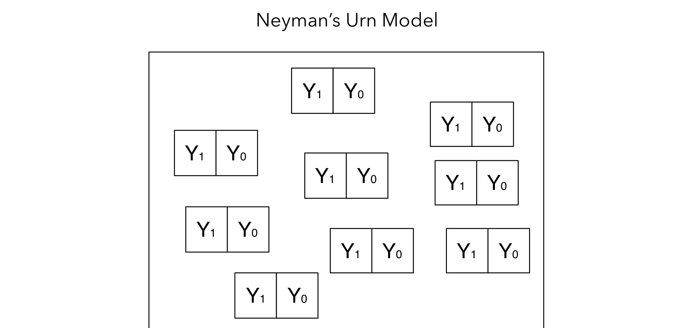
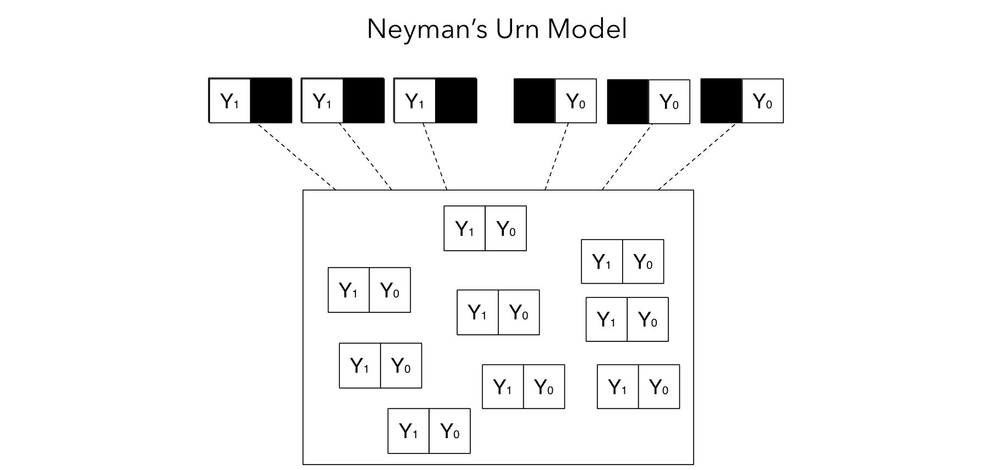
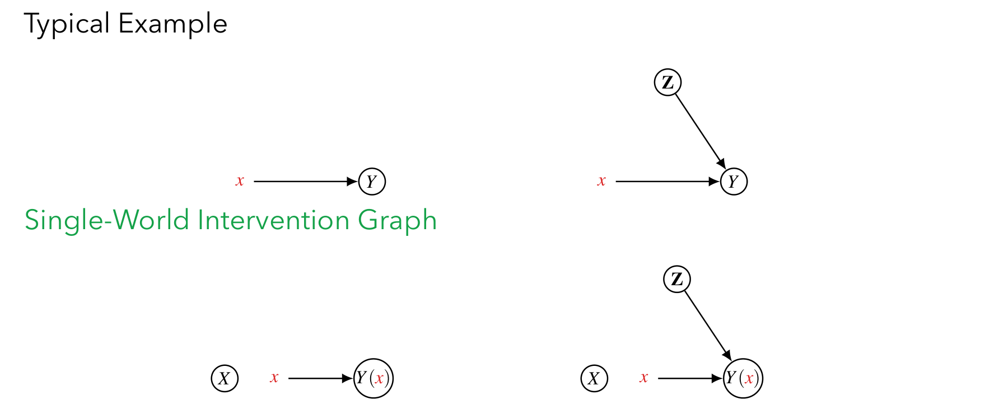
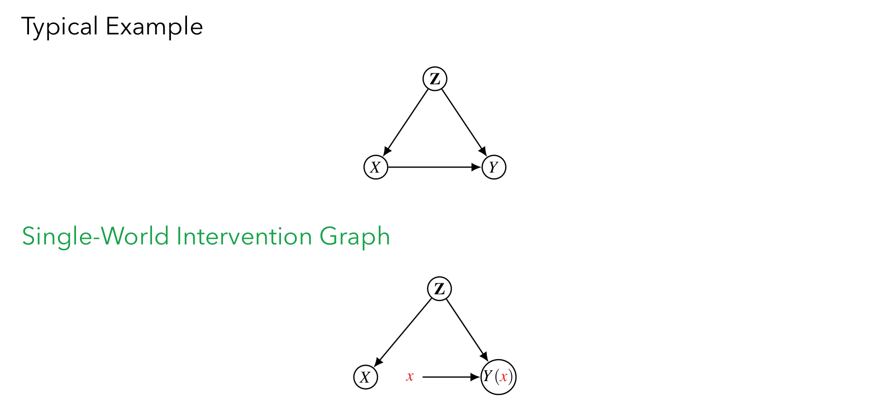

본 포스트는 서울대학교 GSDS Sanghack Lee 교수님의 Causal Inference 강의 자료(10강 Potential Outcome Framework)를 바탕으로, 강의를 처음 듣는 독자도 논리적 흐름을 따라갈 수 있도록 재구성한 것입니다. 원본 슬라이드는 Prof. Fan Li(Duke), Matthew Blackwell(Harvard), Prof. Elias Bareinboim(Columbia)의 강의 자료를 참조하고 있으며, 신의 시점 예시와 일관성 · 교환가능성 논의는 Hernán & Robins, What If 의 Table 1.1–1.2 및 Fine Point 3.4, Section 6.4 · 7.2에서 가져온 것입니다.
한 줄 요약 (TL;DR)
“잠재적 결과 프레임워크는 인과추론을 ‘할당 메커니즘이 만들어 낸 결측 데이터’ 문제로 재정의한다.”
각 단위에 대해 \(Y(1)\)과 \(Y(0)\)이 원리적으로 모두 존재하지만 우리는 실제로 받은 처치에 해당하는 하나만 관측할 수 있습니다(인과추론의 근본적 문제). 따라서 인과 효과의 식별은 “무엇이 관측되고 무엇이 가려지는가”를 결정하는 할당 메커니즘의 성질에 전적으로 달려 있게 됩니다. SUTVA와 일관성이 반사실량과 관측량을 연결해 주고, 무작위화가 성립하면 \(X \perp\!\!\!\perp (Y(1), Y(0))\) 덕분에 상관이 곧 인과가 되며, 관찰 연구에서는 이를 \(Z\)로 조건 건 약한 버전(무교란성 + 양수성)으로 완화해 동일한 식별 논리를 되살립니다. 앞선 회차들이 그래프 언어로 다루었던 뒷문 · 조정 기준을, 이번 회차는 반사실 확률변수의 언어로 다시 서술합니다.
1. 인과추론을 위한 프레임워크 (Frameworks for Causal Inference)
인과추론(Causal Inference)의 목표는 “원인과 결과(cause and effect)”에 대한 우리의 직관을 수학적으로 형식화할 수 있을 만큼 충분히 정교한 모델(model) 혹은 프레임워크(framework)를 구축하는 것입니다. 단순히 “X와 Y가 함께 움직인다”는 상관(association)을 넘어, “X를 개입(intervene)했을 때 Y가 어떻게 변하는가”라는 질문에 답하려면, 그 질문 자체를 표현할 언어가 필요하기 때문입니다.
이러한 목적에서 가장 널리 쓰이는 프레임워크는 크게 두 가지입니다.
- 잠재적 결과 프레임워크 (Potential Outcome framework, PO)
- 반사실 프레임워크(counterfactual framework) 또는 Neyman-Rubin 인과 모델(Neyman-Rubin Causal Model)이라고도 불립니다.
- Neyman(1923)과 Rubin(1974)의 연구에 뿌리를 두고 있습니다.
- 인과 다이어그램 프레임워크 (Causal Diagram framework)
- Pearl(2009)에 의해 체계화된, 그래프(DAG) 기반의 접근입니다.
흥미로운 점은 이 두 프레임워크가 서로 동떨어진 것이 아니라 수학적으로 연결되어 있다(connected)는 사실입니다. Richardson and Robins(2013)는 두 관점을 잇는 다리 역할을 하는 이론적 작업을 수행했으며, 이후 살펴볼 Single-World Intervention Graph(SWIG)가 바로 그 연결고리에 해당합니다.
이번 포스트는 PO 프레임워크를 중심으로 전개되지만, 핵심 가정들을 그래프로 시각화하는 부분에서 두 프레임워크가 어떻게 만나는지를 함께 확인하게 됩니다.
2. 잠재적 결과 프레임워크 (Potential Outcome Framework)
PO 프레임워크는 의학, 보건, 정책, 사회과학 등 수많은 분야에서 가장 널리 사용되는 인과 프레임워크입니다. 이 프레임워크의 가장 본질적인 통찰은 다음 한 문장으로 요약됩니다.
PO 프레임워크 하에서 인과추론은, 관찰된 데이터를 드러내는 과정으로서의 ’할당 메커니즘(assignment mechanism)’을 명시적으로 수학적으로 모델링하는 결측 데이터 문제로 간주된다.
즉, 우리가 보고 싶은 두 개의 결과 중 항상 하나만 관측되고 나머지는 사라진다는 점에서, 인과추론은 본질적으로 결측치를 메우는(imputation) 문제가 됩니다.
이 프레임워크의 역사적 기원은 다음과 같습니다.
- 무작위 실험(randomized experiments)에 관한 Fisher(1918, 1925)와 Neyman(1923)의 통계학적 연구에 뿌리를 둡니다.
- 이후 Rubin(1974, 1978)이 이를 비무작위(nonrandomized) 연구와 다른 형태의 추론에까지 확장하였고, 수많은 후속 연구자들에 의해 발전되어 왔습니다.
3. 기본 개념 (Basic Concepts)
PO 프레임워크를 이해하기 위해 반드시 알아야 할 네 가지 핵심 개념을 정의합니다.
- 잠재적 결과 (Potential Outcomes)
- 처치가 적용되었을 때(application of treatment)와 (b) 처치가 적용되지 않았을 때(non-application, 즉 control), 한 단위(unit)에서 우리가 관심을 두는 측정값(measurement of interest)을 의미합니다.
- 명사로서 반사실(counterfactuals)과 동의어로 쓰입니다.
- 단위 (Unit)
- 처치가 작용하게 될 사람, 장소, 사물을 특정 시점에서 가리킵니다.
- 핵심 주의사항: 두 개의 서로 다른 시점에 있는 동일한 사람·장소·사물은 두 개의 서로 다른 단위로 간주됩니다. 시간이 곧 단위를 구분하는 축이 된다는 점에서, “같은 사람”이라도 시점이 다르면 다른 단위입니다.
- 처치 (Treatment)
- 연구자가 그 효과를 (어떤 측정값에 대해) 평가하고자 하는 개입(intervention)을 의미하며, 개입이 없는 상태(control)와 비교됩니다.
- 인과 효과 (Causal Effect)
- 각 단위에 대해, 처치 하의 잠재적 결과와 통제 하의 잠재적 결과를 비교(comparison)한 것입니다.
표기 정리 (Notation)
이후 논의에서 자주 등장할 기호를 미리 정리하면 다음과 같습니다.
| 기호 | 의미 |
|---|---|
| \(Y_i(1)\) | 단위 \(i\)가 처치(active treatment)를 받았을 때의 잠재적 결과 |
| \(Y_i(0)\) | 단위 \(i\)가 통제(control)를 받았을 때의 잠재적 결과 |
| \(X_i\) | 단위 \(i\)가 실제로 받은 처치 (관측됨, \(0\) 또는 \(1\)) |
| \(Y_i\) | 단위 \(i\)의 실제 관측된 결과 |
| \(Z_i\) | 단위 \(i\)의 처치 전 공변량(pre-treatment covariates) |
4. 잠재적 결과와 결측 데이터 (Potential Outcomes and Missing Data)
4.1 인과추론의 근본적 문제
한 단위에 대해, \(Y(0)\)를 통제 처치를 받았을 때의 결과, \(Y(1)\)을 활성 처치를 받았을 때의 결과라고 합시다. 그렇다면 한 단위의 인과 효과는 \(Y(1) - Y(0)\)로 정의됩니다.
그런데 여기서 결정적인 문제가 발생합니다.
인과추론의 근본적 문제(The fundamental problem of causal inference): 우리는 각 단위에 대해 잠재적 결과들 중 많아야 하나(at most one)만을 관측할 수 있으며, 나머지는 결측(missing)/반사실(counterfactual)이다. — Holland (1986, JASA)
즉, 어떤 사람이 약을 먹었다면(\(X=1\)) 우리는 그가 약을 먹었을 때의 결과 \(Y(1)\)만 보게 되고, 그가 약을 먹지 않았다면 어땠을지(\(Y(0)\))는 영원히 알 수 없습니다. 처치는 본질적으로 한 사람에게 한 번만 적용되기 때문입니다.
4.2 결측 데이터로서의 잠재적 결과: 예시 테이블
이 점을 5명의 단위에 대한 표로 살펴보겠습니다. 만약 우리가 신(god)의 시점에서 두 잠재적 결과를 모두 볼 수 있다면, 진실의 테이블(완전한 데이터)은 다음과 같을 것입니다.
| Unit | \(Y(x=0)\) | \(Y(x=1)\) | \(X\) | \(Y\) |
|---|---|---|---|---|
| 1 | 0 | 1 | 1 | 1 |
| 2 | 0 | 1 | 0 | 0 |
| 3 | 0 | 0 | 1 | 0 |
| 4 | 1 | 1 | 1 | 1 |
| 5 | 1 | 0 | 0 | 1 |
여기서 실제 관측되는 결과 \(Y\)는 단위가 받은 처치 \(X\)에 해당하는 잠재적 결과로 채워집니다. 예를 들어 단위 1은 \(X=1\)이므로 \(Y = Y(x=1) = 1\)이 관측됩니다.
하지만 현실(reality)에서 우리가 실제로 손에 쥐는 데이터는 다음과 같습니다. 받지 않은 처치에 해당하는 잠재적 결과는 모두 물음표(\(?\)), 즉 결측치가 됩니다.
| Unit | \(Y(x=0)\) | \(Y(x=1)\) | \(X\) | \(Y\) |
|---|---|---|---|---|
| 1 | ? | 1 | 1 | 1 |
| 2 | 0 | ? | 0 | 0 |
| 3 | ? | 0 | 1 | 0 |
| 4 | ? | 1 | 1 | 1 |
| 5 | 1 | ? | 0 | 1 |
- \(X_i = 1\)인 단위(1, 3, 4)는 \(Y(x=1)\)만 관측되고 \(Y(x=0)\)은 결측됩니다.
- \(X_i = 0\)인 단위(2, 5)는 \(Y(x=0)\)만 관측되고 \(Y(x=1)\)은 결측됩니다.
이것이 바로 PO 프레임워크가 인과추론을 “절반이 가려진(half-missing)” 데이터를 복원하는 문제로 바라보는 이유입니다.
4.3 Neyman의 항아리 모형 (Neyman’s Urn Model)
이 결측 메커니즘을 직관적으로 시각화한 것이 Neyman의 항아리 모형(Urn Model)입니다.

그러나 우리가 한 단위를 항아리에서 꺼내 처치를 할당하는 순간, 두 칸 중 하나만 드러나고 나머지 하나는 검게 가려집니다(masked).

핵심 메시지는 이것입니다. 무엇이 관측되고 무엇이 결측되는지는 전적으로 “할당 메커니즘”이 결정한다. 따라서 결측치를 올바르게 채워 넣으려면(즉 인과 효과를 식별하려면), 우리는 이 할당 메커니즘의 성질을 반드시 알아야 합니다. 이것이 뒤이어 다룰 가정들로 이어집니다.
5. 신의 시점: 개별 효과와 평균 효과 (God’s Eye View: Individual vs. Average Effects)
앞 절의 5개 단위 예시는 결측 구조를 보여 주기에는 좋지만, 크기가 작아 “개별 효과”와 “평균 효과”가 어떻게 다른지를 드러내지는 못합니다. 강의 자료는 Hernán & Robins의 What If Table 1.1을 빌려, 그리스 신 10명으로 이루어진 가상의 모집단을 사용합니다.
여기서 결과 \(Y\)는 사망(1) 또는 생존(0)입니다. 즉 \(Y=1\)이 나쁜 결과이므로, 효과 \(Y(1) - Y(0)\)가 음수일 때 처치가 이로운 것입니다.
| 단위 | \(Y(0)\) | \(Y(1)\) | 효과 \(Y(1)-Y(0)\) |
|---|---|---|---|
| Rheia | 1 | 0 | \(-1\) |
| Zeus | 0 | 0 | \(0\) |
| Kronos | 0 | 1 | \(+1\) |
| Demeter | 0 | 0 | \(0\) |
| Hades | 0 | 0 | \(0\) |
| Hestia | 1 | 0 | \(-1\) |
| Poseidon | 1 | 0 | \(-1\) |
| Hera | 1 | 0 | \(-1\) |
| Artemis | 1 | 1 | \(0\) |
| Apollo | 0 | 1 | \(+1\) |
| 위험도(Risk) | 0.5 | 0.3 |
이 표는 신의 시점(God’s eye view)입니다. 두 잠재적 결과가 모두 채워져 있으므로, 우리가 원하는 모든 양을 직접 계산할 수 있습니다.
- 평균 인과 효과(average causal effect)는 두 열의 평균 위험도 차이입니다. \[ \mathbb{E}[Y(1)] - \mathbb{E}[Y(0)] = 0.3 - 0.5 = -0.2 \] 즉 이 처치는 모집단 전체의 사망 위험을 20%p 낮춥니다.
- 그러나 개별 효과는 전혀 균질하지 않습니다.
- \(-1\) (도움을 받음): Rheia, Hestia, Poseidon, Hera — 4명
- \(+1\) (해를 입음): Kronos, Apollo — 2명
- \(0\) (변화 없음): Zeus, Demeter, Hades, Artemis — 4명
“평균 인과 효과가 \(-0.2\)”라는 결론은 모든 사람의 위험이 조금씩 줄었다는 뜻이 아닙니다. 실제로는 4명이 살아나고 2명이 죽는, 부호가 정반대인 효과들이 뒤섞인 결과입니다. 평균 처치 효과 하나만 보고하는 순간 이 이질성은 통째로 사라지며, 이것이 뒤에서 CATE와 같은 조건부 추정량이 필요해지는 이유입니다.
그리고 결정적으로, 우리는 같은 사람에 대해 두 열을 동시에 관측할 수 없습니다. 위 표는 계산의 기준점일 뿐 현실에서는 절대 손에 넣을 수 없는 자료입니다.
6. 연구자가 실제로 보는 것 (What the Researcher Actually Sees)
그렇다면 같은 모집단을 현실의 연구자 시점에서 보면 어떤 자료가 남을까요? 처치 \(X\)가 배정되고 나면, 배정된 쪽의 잠재적 결과만 \(Y^{\text{obs}}\)로 드러나고 반대쪽은 물음표가 됩니다 (What If Table 1.2).
| 단위 | \(Y(0)\) | \(Y(1)\) | \(X\) | \(Y^{\text{obs}}\) |
|---|---|---|---|---|
| Rheia | ? | 0 | 1 | 0 |
| Zeus | 0 | ? | 0 | 0 |
| Kronos | ? | 1 | 1 | 1 |
| Demeter | 0 | ? | 0 | 0 |
| Hades | 0 | ? | 0 | 0 |
| Hestia | ? | 0 | 1 | 0 |
| Poseidon | 1 | ? | 0 | 1 |
| Hera | ? | 0 | 1 | 0 |
| Artemis | 1 | ? | 0 | 1 |
| Apollo | ? | 1 | 1 | 1 |
- 물음표는 영원히 결측된 반사실입니다. 앞 절의 신의 시점 표와 대조해 보면 물음표 자리에 무엇이 들어가야 하는지 알 수 있지만, 현실의 연구자에게는 그 표가 없습니다.
- 드러난 칸은 일관성(consistency)에 의해 채워집니다: \(Y^{\text{obs}} = Y(X)\).
이제 이 관측 자료만으로 소박한 비교(naïve comparison)를 해 보겠습니다.
- 처치군(\(X=1\): Rheia, Kronos, Hestia, Hera, Apollo)의 평균: \(\bar{Y} = 2/5 = 0.4\)
- 통제군(\(X=0\): Zeus, Demeter, Hades, Poseidon, Artemis)의 평균: \(\bar{Y} = 2/5 = 0.4\)
- 차이: \(0.4 - 0.4 = 0\)
\[ \underbrace{0}_{\text{관측된 연관성}} \;\neq\; \underbrace{-0.2}_{\text{참 인과 효과}} \]
처치가 무작위로 배정되지 않았기 때문입니다. 이 예시에서는 상태가 더 나쁜(즉 \(Y(0)=1\)일 가능성이 높은) 환자들이 스스로 처치를 선택했고, 그 결과 처치군과 통제군이 애초에 비교 가능한 집단이 아니게 되었습니다. 이것이 교란(confounding)이며, 연관성과 인과성 사이의 간극을 메우려면 두 집단이 잠재적 결과의 관점에서 서로 교환 가능해야 한다는 조건, 즉 교환가능성(exchangeability)이 필요합니다.
이 예시는 앞으로 도입할 가정들이 왜 필요한지를 한 장으로 보여 줍니다. 관측된 차이 \(\mathbb{E}[Y \mid X=1] - \mathbb{E}[Y \mid X=0]\)을 인과 효과 \(\mathbb{E}[Y(1) - Y(0)]\)로 읽어도 좋은 조건이 무엇인지 — 그것이 이후 논의의 전부입니다.
7. 가정: SUTVA (Stable Unit Treatment Value Assumption)
7.1 SUTVA의 정의
가정 1 (SUTVA, Rubin 1980)은 두 개의 하위 가정으로 구성됩니다.
- 상호 간섭 없음 (No interference): 한 단위의 잠재적 결과가 다른 단위들이 받은 처치에 영향받지 않는다.
- 처치의 단일 버전 (No different versions of a treatment): 처치에 서로 다른 버전이 없다. (예: 같은 “수술”이라도 집도의에 따라 효과가 다르다면 이는 서로 다른 버전의 처치이다.)
SUTVA의 역할은 우리가 실제로 관측하는 개입 \(X\)와, 우리가 관심을 두는 인과적 개입 \(x\)를 연결하는 것입니다. 즉, 다음의 일관성(consistency) 관계가 성립합니다.
- 만약 \(X_i = 1\)이면, \(Y_i = Y_i(1)\)
- 만약 \(X_i = 0\)이면, \(Y_i = Y_i(0)\)
일관성 관계의 통합 표현
위의 두 조건문(if-then)은 하나의 식으로 깔끔하게 합쳐집니다.
\[ Y_i = X_i\, Y_i(1) + (1 - X_i)\, Y_i(0) \]
이 식을 단계별로 확인해 보겠습니다.
- \(X_i = 1\)을 대입하면: \(Y_i = 1\cdot Y_i(1) + (1-1)\cdot Y_i(0) = Y_i(1)\).
- \(X_i = 0\)을 대입하면: \(Y_i = 0\cdot Y_i(1) + (1-0)\cdot Y_i(0) = Y_i(0)\).
즉 이 한 줄의 식은 “관측된 결과 \(Y_i\)는 받은 처치에 해당하는 잠재적 결과와 같다”는 스위치(switch) 역할을 정확히 수행합니다. 여기서 \(X_i\)는 0 또는 1만 취하므로 \(X_i\)와 \((1-X_i)\) 중 하나는 항상 0이 되어, 두 항 중 하나만 살아남는 구조입니다.
7.2 SUTVA 위반: 상호 간섭 (Interference)
SUTVA의 첫 번째 하위 가정이 깨지는 대표적인 경우가 상호 간섭(Interference)입니다.
상호 간섭: 한 개인 \(i\)의 잠재적 결과 \(Y_i(x)\)가 다른 사람들이 받는 처치에 의존하는 현상.
대표적인 예시는 다음과 같습니다.
- 백신 접종(vaccination): 내 주변 사람들이 백신을 맞으면(집단 면역), 내가 맞지 않아도 감염 결과가 달라집니다.
- 광고(advertising): 친구가 광고를 보고 내게 추천하면, 내 결과가 영향을 받습니다.
- 감염병(infectious diseases), 소셜 네트워크(social networks), 농업 실험(agricultural experiments): 모두 한 단위가 이웃 단위에 영향을 주는 구조입니다.
상호 간섭이 존재할 경우, 표준적인 PO 프레임워크의 가정만으로는 인과추론이 불가능하며, 추가적인 가정이 요구됩니다 (예: Rosenbaum 2007; Hudgens and Halloran 2008). 다만 간섭이 언제나 골칫거리이기만 한 것은 아닙니다. 백신의 집단 면역 효과처럼 파급 효과(spillover effect) 자체가 연구의 관심 대상인 경우도 많으며, 이때는 간섭을 제거해야 할 잡음이 아니라 추정해야 할 표적으로 다루게 됩니다.
8. 일관성과 잘 정의된 개입 (Consistency and Well-Defined Interventions)
SUTVA 안에는 앞에서 스치듯 지나간 조건이 하나 더 들어 있습니다. 바로 일관성(consistency)입니다.
\[ X_i = x \;\Longrightarrow\; Y_i = Y_i(x) \]
즉 “\(X\)를 실제로 관측된 값 \(x\)로 설정했을 때의 잠재적 결과”는 “실제로 관측된 결과”와 같다.
너무나 당연해 보이는 진술이지만, 여기에는 결코 자명하지 않은 요구가 숨어 있습니다. “\(X = x\)”라는 표현이 모든 단위에게 같은 것을 의미해야 한다는 요구입니다.
8.1 20kg 감량의 인과 효과
강의 자료가 드는 예시는 이렇습니다. “20kg을 감량하는 것이 심장마비 위험에 미치는 인과 효과는 무엇인가?”
같은 “$X = $ 20kg 감량”이라도 그 실현 방식은 전혀 다를 수 있습니다.
| 개입의 실제 내용 | 잠재적 결과 \(Y(x)\) |
|---|---|
| 식이요법과 운동을 통한 20kg 감량 | 생존 (survived) |
| 기아 또는 질병에 의한 20kg 감량 | 사망 (died) |
- 두 사람 모두 데이터상으로는 동일하게 \(X = 1\)로 기록되지만, 결과는 정반대입니다.
- 그렇다면 \(Y(x)\)라는 기호는 하나의 값을 가리키지 못합니다. 즉 \(Y(x)\)가 잘 정의되지 않은(not well-defined) 것입니다.
\(Y(x)\)가 잘 정의되지 않으면, \(\mathbb{E}[Y(1) - Y(0)]\)이라는 추정 대상 자체가 무엇인지 알 수 없게 됩니다. 모호한 처치 \(\Rightarrow\) 모호한 인과 질문 \(\Rightarrow\) 무의미한 답이라는 사슬이 성립합니다. 아무리 정교한 추정량을 붙여도, 추정 대상이 정의되지 않았다면 그 숫자는 해석할 수 없습니다.
해결책은 통계적인 것이 아니라 설계적인 것입니다. 개입을 충분히 정밀하게 명세하면 됩니다 — 예컨대 “20kg 감량”이 아니라 “감독 하의 식이·운동 프로그램을 통한 20kg 감량”으로 처치를 정의하는 것입니다. 이렇게 하면 \(X = x\)가 모두에게 같은 것을 의미하게 되고, \(Y(x)\)가 비로소 하나의 값을 가리킵니다.
이 논의는 Hernán & Robins, What If, Fine Point 3.4를 따른 것이며, 같은 내용을 인과 다이어그램 언어로 다시 정리한 것이 부록 18.1절입니다.
9. 인과 추정량 (Causal Estimands)
이제 우리가 추정하고자 하는 인과적 양(estimand)들을 정의합니다. 크게 차이(difference) 기반과 비율(ratio) 기반으로 나뉩니다.
9.1 차이 기반 추정량 (Difference)
조건부 평균 처치 효과 (Conditional Average Treatment Effect, CATE): 특정 공변량 값에 조건을 건 효과입니다. \[ \tau(z) = \mathbb{E}\big[Y_i(1) - Y_i(0) \mid Z = z\big] \] 서로 다른 하위 집단(\(Z=z\))마다 처치 효과가 다를 수 있다는, 효과의 이질성(heterogeneity)을 포착하는 핵심 추정량입니다.
평균 처치 효과 (Average Treatment Effect, ATE): 전체 모집단에 대한 평균 효과입니다. \[ \tau = \mathbb{E}\big[Y_i(1) - Y_i(0)\big] \]
처치군에 대한 평균 처치 효과 (Average Treatment effect for the Treated, ATT): 실제로 처치를 받은 단위들(\(X_i=1\))에 한정한 평균 효과입니다. \[ \tau_{\text{ATT}} = \mathbb{E}\big[Y_i(1) - Y_i(0) \mid X_i = 1\big] \]
ATE는 “정책을 모두에게 적용했을 때”의 효과를, ATT는 “이미 처치를 선택한 사람들에게서의” 효과를 묻는다는 점에서 질문의 대상이 다릅니다.
9.2 비율 기반 추정량 (Ratio)
- 개별 비율 처치 효과 (Individual treatment effect in ratio): \[ r_i = \frac{Y_i(1)}{Y_i(0)} \]
- 모집단 비율 처치 효과 (Population treatment effect in ratio): \[ r = \frac{\mathbb{E}[Y_i(1)]}{\mathbb{E}[Y_i(0)]} \]
- 상대적 인과 효과 / 리프트 (Relative causal effect, lift): \[ l = \frac{\mathbb{E}[Y_i(1) - Y_i(0)]}{\mathbb{E}[Y_i(0)]} \]
추가 논의
- 연속형 결과(continuous outcomes)는 이론 문헌과 사회과학 응용에서 흔하고, 이진형 결과(binary outcomes)는 의학·보건 연구에서 더 흔합니다.
- 중요한 주의사항: 비율은 효과가 동질적(homogeneous)이지 않은 한, 개별 인과 효과의 평균이 아닙니다. 즉, 일반적으로 \[ \frac{\mathbb{E}[Y_i(1)]}{\mathbb{E}[Y_i(0)]} \neq \mathbb{E}\!\left[\frac{Y_i(1)}{Y_i(0)}\right] \] 이는 기댓값의 비율과 비율의 기댓값이 다르다는 점(Jensen 부등식과 같은 비선형 변환의 성질)에서 비롯됩니다. 효과가 모든 단위에서 동일할 때에만 두 양이 일치합니다.
10. 개요: 무작위화와 관찰 연구 (Overview: Randomization and Observational Study)
지금까지 정의한 추정량들을 데이터로부터 식별(identify)하려면, 4장에서 강조한 “할당 메커니즘”이 어떤 성질을 갖는지가 결정적입니다. 이제 두 가지 상황을 비교합니다.
- 무작위 실험 (Randomized experiment): 연구자가 할당 메커니즘을 알고 있고 통제합니다.
- 관찰 연구 (Observational study): 할당 메커니즘이 자연적으로 결정되며, 연구자가 알지 못합니다 → 여기서 무교란성 가정이 핵심이 됩니다.
11. 무교란 할당 (Unconfounded Assignment)
무교란 할당(Unconfounded Assignment): 할당 메커니즘이 잠재적 결과에 의존하지 않고, 오직 처치 전 공변량에만 의존할 때, 그 할당은 무교란적이라고 한다.
\[ p\big(X_i = 1 \mid Z_i, Y_i(0), Y_i(1)\big) = p\big(X_i = 1 \mid Z_i\big) \]
이 식의 의미를 풀어 보겠습니다.
- 좌변은 “공변량 \(Z_i\)와 두 잠재적 결과를 모두 알 때 처치를 받을 확률”입니다.
- 우변은 “공변량 \(Z_i\)만 알 때 처치를 받을 확률”입니다.
- 두 확률이 같다는 것은, 잠재적 결과 \(Y_i(0), Y_i(1)\)가 처치 할당 확률에 아무런 추가 정보를 주지 않음을 뜻합니다. 즉 “결과가 좋을 것 같은 사람일수록 처치를 더 받는” 식의 선택 편향이 없다는 의미입니다.
여기서 우변의 \(p(X_i = 1 \mid Z_i)\)는 성향 점수(propensity score)라고 불립니다 (Rosenbaum and Rubin, 1983).
- 무작위 실험에서 할당 메커니즘은 무교란적인가?
- 그렇습니다. 게다가 그 메커니즘은 연구자에 의해 알려져 있고(known) 통제됩니다(controlled). 동전 던지기처럼 처치를 배정한다면, 그 배정 확률은 잠재적 결과와 무관함이 설계상 보장됩니다.
12. 무작위화의 역할 (Role of Randomization)
12.1 무작위화가 보장하는 것
무작위 실험에서 할당 메커니즘은 알려져 있고 통제되므로, 무작위화(randomization)는 다음을 보장합니다.
- 관측된 공변량의 균형(balance): \(X \perp\!\!\!\perp Z\)
- 관측되지 않은 공변량의 균형: \(X \perp\!\!\!\perp U\)
- 잠재적 결과의 균형, 즉 무시가능성(ignorability) 또는 무교란성(unconfoundedness)을 보장: \[ X \perp\!\!\!\perp \big(Y(1), Y(0)\big) \]
세 번째가 가장 강력한 결과입니다. 무작위화는 우리가 측정할 수 없는 \(U\)까지 포함하여 모든 것을 처치군과 통제군 사이에 균형 있게 분배하므로, 처치 여부 \(X\)가 잠재적 결과와 완전히 독립이 됩니다.
문헌에서 공변량(covariates), 처치 전 변수(pretreatment variables), 기저 특성(baseline characteristics)은 모두 \(Z\)를 가리키는 말로 혼용됩니다.
12.2 무작위화 하의 식별: 상관이 인과를 함의한다
무작위화가 성립하면, 인과 효과가 식별(identified)됩니다. 다음을 보일 수 있기 때문입니다.
\[ P\big(Y(x)\big) = P\big(Y(x) \mid X = x\big) = P\big(Y \mid X = x\big), \quad x = 0, 1 \]
- 첫 번째 등호는 \(X \perp\!\!\!\perp Y(x)\), 즉 무작위화에 의한 독립성에서 나옵니다. (조건을 걸어도 분포가 변하지 않음)
- 두 번째 등호는 SUTVA의 일관성(\(X=x\)일 때 \(Y = Y(x)\))에서 나옵니다.
이로부터, PO 프레임워크의 가정 하에서 상관이 인과를 함의한다(association does imply causation)는, 평소의 통념을 뒤집는 결론을 얻습니다. ATE를 전개해 보면:
\[ \begin{aligned} \tau_{\text{ATE}} &\equiv \mathbb{E}\big[Y(1) - Y(0)\big] \\ &= \mathbb{E}\big[Y(1) \mid X = 1\big] - \mathbb{E}\big[Y(0) \mid X = 0\big] \\ &= \mathbb{E}\big[Y \mid X = 1\big] - \mathbb{E}\big[Y \mid X = 0\big] \end{aligned} \]
- 두 번째 줄: 무작위화에 의해 \(Y(1) \perp\!\!\!\perp X\)이므로 \(\mathbb{E}[Y(1)] = \mathbb{E}[Y(1)\mid X=1]\), 마찬가지로 \(\mathbb{E}[Y(0)] = \mathbb{E}[Y(0)\mid X=0]\).
- 세 번째 줄: 일관성에 의해 조건부 잠재적 결과를 관측된 결과로 교체.
최종식은 순전히 관측 데이터(처치군의 평균 결과 \(-\) 통제군의 평균 결과)만으로 인과 효과를 계산할 수 있음을 보여줍니다. 이때 모집단 전체에 대한 \(\mathbb{E}[Y(1)-Y(0)]\)를 모집단 ATE(Population ATE, PATE)라 하고, 손에 쥔 표본에 대한 평균을 표본 ATE(Sample ATE, SATE)라 구분하여 부릅니다.
12.3 그래프로 본 무작위화 (Role of Randomization as Graphs)
이 지점에서 PO 프레임워크와 인과 다이어그램 프레임워크가 만납니다.

- Typical Example (위): 무작위화 상황에서는 \(Z\)가 있더라도 \(Z \to X\) 화살표가 없습니다. 즉 공변량이 처치 할당에 영향을 주지 않습니다.
- SWIG (아래): 처치 노드를 \(X \,\|\, x\)로 분리하여, \(x\)가 결정한 후의 잠재적 결과 \(Y(x)\)를 그래프에 직접 등장시킵니다. 이 표현 덕분에 \(X \perp\!\!\!\perp Y(x)\)라는 PO의 독립성 조건이 그래프의 분리(d-separation)로 자연스럽게 읽힙니다.
13. 관찰 연구 (Observational Studies, PO 접근)
현실에서는 무작위 실험이 불가능한 경우가 대부분입니다. 이때 관찰 데이터로부터 인과 효과를 식별하기 위해 가장 흔히 사용되는 두 가지 가정이 있습니다.
13.1 가정 1: 측정되지 않은 교란 없음 (No unmeasured confounding)
\[ \{Y_i(1), Y_i(0)\} \perp\!\!\!\perp X_i \mid Z_i \]
- 이 가정은 매우 다양한 이름으로 불립니다: 무교란성(unconfoundedness), 무시가능성(ignorability), 관측 가능 변수에 의한 선택(selection on observables), 누락 변수 없음(no omitted variables), 외생성(exogenous), 조건부 교환가능성(conditional exchangeability) 등.
- 직관적 의미: 공변량 \(Z_i\)에 조건을 걸고 나면, 처치 \(X_i\)는 (사실상) 무작위로 배정된 것과 같다. 즉, 12장의 강력한 무조건 독립성 \(X \perp\!\!\!\perp (Y(1),Y(0))\)를, \(Z\)로 조건을 건 약한 버전으로 완화한 것입니다.
13.2 가정 2: 양수성 / 중첩 (Positivity / Overlap)
\[ 0 < P(X_i = 1 \mid Z_i) < 1 \]
- 의미: 모든 공변량 값 \(Z_i\)에서 처치와 통제가 둘 다 가능해야 한다. 어떤 하위 집단이 항상 처치만 받거나(\(P=1\)) 항상 통제만 받는다면(\(P=0\)), 그 집단에서는 반사실을 추정할 데이터 자체가 없으므로 인과 효과를 식별할 수 없습니다.
- 지금은 \(Z\)가 주어진 것으로 간주하지만, 나중에는 어떤 \(Z\)를 선택해야 하는지를 다루게 됩니다. (이는 그래프 프레임워크의 조정 기준(adjustment criterion)과 동치입니다.)
이 두 가정은 틀릴 수 있는 가정(assumptions that can be wrong)입니다. 데이터만으로는 검증이 불가능하므로, 도메인 지식에 기반한 정당화가 필수적입니다.
13.3 그래프로 본 무교란성 (Unconfoundedness as Graphs)

무작위 실험(12.3절)에서는 \(Z \to X\) 화살표가 아예 없었지만, 관찰 연구에서는 이 화살표가 존재합니다. 따라서 무조건적 독립성은 성립하지 않고, \(Z\)에 조건을 건 뒤에야 무시가능성이 회복됩니다. 이것이 “조건부(conditional)” 무시가능성이라는 이름의 이유입니다.
14. ATE의 식별 (Identification of the ATE)
양수성과 측정되지 않은 교란 없음 가정이 함께 성립하면 ATE가 식별됩니다. 식별 과정을 한 줄씩 따라가 보겠습니다.
\[ \begin{aligned} \tau &= \mathbb{E}\big[Y_i(1) - Y_i(0)\big] \\[4pt] &= \mathbb{E}_Z\Big\{ \mathbb{E}\big[Y_i(1) - Y_i(0) \mid Z_i\big] \Big\} \\[4pt] &= \mathbb{E}_Z\Big\{ \mathbb{E}\big[Y_i(1) \mid Z_i\big] - \mathbb{E}\big[Y_i(0) \mid Z_i\big] \Big\} \\[4pt] &= \mathbb{E}_Z\Big\{ \mathbb{E}\big[Y_i(1) \mid X_i = 1, Z_i\big] - \mathbb{E}\big[Y_i(0) \mid X_i = 0, Z_i\big] \Big\} \\[4pt] &= \mathbb{E}_Z\Big\{ \mathbb{E}\big[Y_i \mid X_i = 1, Z_i\big] - \mathbb{E}\big[Y_i \mid X_i = 0, Z_i\big] \Big\} \end{aligned} \]
각 단계의 근거는 다음과 같습니다.
- (1→2) 전체 기댓값의 법칙(Law of Total Expectation): \(\mathbb{E}[\cdot] = \mathbb{E}_Z\{\mathbb{E}[\cdot \mid Z]\}\). 공변량 \(Z\)로 한 번 조건을 건 뒤 다시 \(Z\)에 대해 평균을 취합니다.
- (2→3) 기댓값의 선형성: 차이의 기댓값을 기댓값의 차이로 분리합니다.
- (3→4) 무교란성 가정 사용: \(\{Y_i(1),Y_i(0)\} \perp\!\!\!\perp X_i \mid Z_i\)이므로, \(Z_i\)에 조건이 걸린 상태에서는 처치 \(X_i\)를 추가로 조건에 넣어도 잠재적 결과의 기댓값이 변하지 않습니다. (이때 \(X_i\)의 조건값을 각 잠재적 결과에 대응되게, 즉 \(Y_i(1)\)에는 \(X_i=1\), \(Y_i(0)\)에는 \(X_i=0\)을 붙입니다. 양수성이 이 조건부 기댓값이 잘 정의되도록 보장합니다.)
- (4→5) 일관성(SUTVA): \(X_i=1\)인 조건 하에서는 \(Y_i(1) = Y_i\), \(X_i=0\)인 조건 하에서는 \(Y_i(0) = Y_i\)이므로, 반사실량이 모두 관측 가능한 양으로 바뀝니다.
최종식은 오른쪽 변이 전부 관측 가능한 양으로만 이루어져 있어, ATE가 데이터로부터 추정 가능함을 보여줍니다.
14.1 조건부 기댓값 함수(CEF)로의 정리
이 식별 결과를 더 다루기 쉽게 만들기 위해, 처치군과 통제군의 조건부 기댓값 함수(Conditional Expectation Function, CEF)를 정의합니다.
\[ \mu_1(z) = \mathbb{E}\big[Y_i(1) \mid Z_i = z\big], \qquad \mu_0(z) = \mathbb{E}\big[Y_i(0) \mid Z_i = z\big] \]
- 이 함수들은 잠재적 결과의 평균이 공변량에 따라 어떻게 변하는지를 나타냅니다.
위 증명의 핵심은 바로 다음의 반사실 = 관측의 등식으로 압축됩니다.
\[ \underbrace{\mu_1(z)}_{\text{counterfactual (반사실)}} = \underbrace{\mathbb{E}\big[Y_i \mid X_i = 1, Z_i = z\big]}_{\text{observational (관측)}}, \qquad \mu_0(z) = \mathbb{E}\big[Y_i \mid X_i = 0, Z_i = z\big] \]
좌변은 “절대 관측할 수 없는” 반사실량이지만, 무교란성과 일관성 덕분에 우변의 “관측 가능한” 회귀 함수와 같아집니다. 이것이 식별의 본질입니다.
15. ATE의 회귀 추정 (Regression Estimation of the ATE)
식별식을 알았으니 이제 실제로 추정(estimate)할 차례입니다. 가장 직관적인 방법은 회귀(regression)를 이용하는 것입니다.
- 회귀 추정량 \(\hat\mu_1(z)\)와 \(\hat\mu_0(z)\)를 데이터로부터 적합합니다. 선형 모델일 수도, 비선형 모델일 수도 있습니다.
- 가장 안전한 관행(safest practice): 처치군과 통제군 각각에서 별도의 회귀를 추정하는 것입니다. (두 그룹의 함수 형태가 다를 수 있으므로)
이렇게 얻은 ATE의 회귀 추정량은 다음과 같습니다.
\[ \hat\tau_{\text{reg}} = \frac{1}{N} \sum_{i=1}^{N} \Big( \hat\mu_1(Z_i) - \hat\mu_0(Z_i) \Big) \]
추정 절차(Procedure)는 다음 세 단계입니다.
- 모든 단위에 대해 \(X_i = 1\)이라고 가정했을 때의 예측값 \(\hat\mu_1(Z_i)\)을 구합니다.
- 모든 단위에 대해 \(X_i = 0\)이라고 가정했을 때의 예측값 \(\hat\mu_0(Z_i)\)을 구합니다.
- 두 예측값의 차이의 평균을 취합니다.
이 절차는 14장 식별식의 마지막 줄(\(\mathbb{E}_Z\{\cdots\}\)의 표본 버전)을 그대로 구현한 것입니다. 핵심은 각 단위마다 두 시나리오(처치/통제)를 모두 예측하여 결측된 반사실을 메운다(impute)는 점입니다.
16. CATE를 위한 X-Learner (Künzel et al.)
ATE는 모집단 전체의 평균 효과 하나만 제공합니다. 그러나 실제로는 “누구에게 효과가 큰가?”라는 이질적 효과, 즉 CATE \(\tau(z)\)에 관심이 있는 경우가 많습니다. X-Learner(Künzel et al.)는 특히 처치군과 통제군의 크기가 불균형(unbalanced)할 때 강력한 메타 러너(meta-learner)입니다.
16.1 알고리즘 3단계
1단계 — 반응 함수(response functions) 추정: 15장과 동일하게 두 그룹의 결과 함수를 각각 추정합니다.
\[ \hat\mu_0(z) \approx \mathbb{E}[Y(0) \mid Z = z], \qquad \hat\mu_1(z) \approx \mathbb{E}[Y(1) \mid Z = z] \]
2단계 — 개별 처치 효과의 대체(impute): 각 단위에 대해, 반대 그룹의 추정 함수를 이용해 처치 효과를 메웁니다.
처치군(\(X_i = 1\))에 대해: \[ \tilde{D}^{1}_i := Y_i - \hat\mu_0(z_i) \] 실제 관측된 처치 결과 \(Y_i\)에서, 만약 이 사람이 통제받았다면의 예측값 \(\hat\mu_0(z_i)\)를 뺍니다.
통제군(\(X_i = 0\))에 대해: \[ \tilde{D}^{0}_i := \hat\mu_1(z_i) - Y_i \] 만약 이 사람이 처치받았다면의 예측값 \(\hat\mu_1(z_i)\)에서, 실제 관측된 통제 결과 \(Y_i\)를 뺍니다.
이렇게 대체된 효과를 다시 회귀하여 두 개의 CATE 추정량을 얻습니다.
\[ \hat\tau(z) \approx \mathbb{E}\big[\tilde{D}^{1}_i \mid z\big] = \mathbb{E}\big[\tilde{D}^{0}_i \mid z\big] \quad (\text{두 개의 추정량!}) \]
- \(\tau_1(z)\): 처치군의 대체 효과로부터 학습한 추정량.
- \(\tau_0(z)\): 통제군의 대체 효과로부터 학습한 추정량.
3단계 — 가중 결합(weighted estimator): 두 추정량을 가중치 함수 \(g(z)\)로 결합합니다.
\[ \hat\tau(z) = g(z)\,\tau_1(z) + \big(1 - g(z)\big)\,\tau_0(z) \]
- \(g(z) \in [0,1]\)는 가중 함수로, 흔히 성향 점수를 사용합니다. 직관적으로, 데이터가 풍부한 그룹의 추정량에 더 큰 가중치를 주도록 설계됩니다. 예를 들어 처치군이 적다면 통제군 기반 추정량 \(\tau_0\)에 더 의존하게 됩니다.
16.2 시각적 직관 (불균형 설계 예시)
X-Learner의 작동 원리를, 통제군(\(W=0\))이 많고 처치군(\(W=1\))이 적은 불균형 설계를 예로 삼아 세 단계로 따라가 보겠습니다. 공변량을 가로축, 결과값을 세로축에 둔 산점도를 머릿속에 그려 두면 좋습니다.
- 1단계 — 관측 결과와 1차 기저 학습기(Observed Outcome & First Stage Base Learners). 다수의 통제군 관측치로부터 적합된 \(\hat\mu_0\)는 결과 함수가 0과 0.5 부근에서 점프하는 계단 모양의 복잡한 구조까지 잘 포착합니다. 반면 처치군 관측치가 희소한 탓에 \(\hat\mu_1\)은 거의 평평한 직선으로만 적합됩니다. 한 그룹의 표본이 적으면 그 그룹의 반응 함수 추정이 빈약해진다 — 이것이 X-Learner가 해결하려는 문제 상황입니다.
- 2단계 — 대체된 처치 효과와 2차 기저 학습기(Imputed Treatment Effects & Second Stage Base Learners). 처치군 대체값 \(\tilde{D}^{1}\)로부터 학습한 \(\hat\tau_1\)은 참 효과 부근을 비교적 평탄하게 지나가지만, 통제군 대체값 \(\tilde{D}^{0}\)는 1단계에서 \(\hat\mu_1\)이 빈약하게 적합된 탓에 참 효과로부터 크게 흩어집니다. 빈약한 기저 학습기가 대체값의 품질을 그대로 떨어뜨린다는 점이 여기서 드러납니다.
- 3단계 — 개별 처치 효과와 CATE 추정량(Individual Treatment Effects & CATE Estimators). 단순 T-learner의 추정량 \(\hat\tau^{T}\)는 계단 구조를 따라가기는 하지만 표본이 적은 구간에서 과대·과소 추정의 진폭이 큽니다. 두 추정량을 가중 결합한 X-Learner의 \(\hat\tau^{X}\)는 훨씬 부드럽고 안정적인 곡선을 그리며, 불균형 상황에서 T-learner보다 안정적인 CATE 추정을 제공한다는 핵심 우위를 보여 줍니다.
핵심 통찰: 통제군 데이터가 풍부하므로 \(\hat\mu_0\)는 복잡한 구조까지 잘 잡아내지만, 처치군 데이터가 희소하여 \(\hat\mu_1\)은 단순하게만 적합됩니다. X-Learner는 풍부한 쪽의 정보를 빌려와 희소한 쪽의 효과 추정을 보강하는 영리한 교차(cross) 구조를 통해, 불균형 상황에서 T-learner보다 우수한 성능을 냅니다.
17. 요약 (Summary)
PO 프레임워크의 전체 논리를 두 가지 시나리오로 압축하면 다음과 같습니다.
17.1 무작위화 (Randomization) 시나리오
- 잠재적 결과: \(Y(1)\)과 \(Y(0)\)
- 무시가능성(무작위화): \[ Y(1), Y(0) \perp\!\!\!\perp X \]
- 식별: \[ \mathbb{E}[Y(1)] = \mathbb{E}[Y(1) \mid X = 1] = \mathbb{E}[Y \mid X = 1] \]
17.2 관찰 연구 (Conditional Ignorability / Backdoor) 시나리오
- 잠재적 결과: \(Y(1)\)과 \(Y(0)\)
- 조건부 무시가능성(뒷문, Backdoor): \[ Y(1), Y(0) \perp\!\!\!\perp X \mid Z \]
- 식별: \[ \mathbb{E}[Y(1)] = \mathbb{E}\big[\mathbb{E}[Y(1) \mid Z]\big] = \mathbb{E}\big[\mathbb{E}[Y(1) \mid X = 1, Z]\big] = \mathbb{E}\big[\mathbb{E}[Y \mid X = 1, Z]\big] \]
두 시나리오의 차이는 오직 무시가능성에 \(Z\)로 조건을 거는가의 여부입니다. 무작위화는 이 조건 없이도 독립성을 보장하지만, 관찰 연구에서는 적절한 공변량 \(Z\)에 조건을 걸어야만(그리고 양수성이 성립해야만) 동일한 식별 논리가 작동합니다. 이것이 PO 프레임워크가 인과추론을 “할당 메커니즘을 통한 결측 데이터 복원”으로 일관되게 바라보는 방식입니다.
18. 부록 (Appendix)
본문에서 PO 프레임워크의 언어로 서술한 가정들을, 강의 자료는 마지막에 다시 인과 다이어그램의 언어로 되짚습니다. 두 프레임워크가 같은 것을 다른 기호로 말하고 있음을 확인하는 자리입니다.
18.1 인과 다이어그램에서의 양수성과 일관성
흥미로운 점은, 그래프에서 양수성과 일관성이 처치 노드의 서로 다른 쪽 화살표에 대응된다는 것입니다.
| 가정 | 관심 대상 | 위반의 형태 |
|---|---|---|
| 양수성(Positivity) | 처치 노드로 들어오는 화살표 | 처치 \(X\)가 처치 전 변수 \(Z\)의 결정적 함수일 때 (\(Z \to X\)가 결정적) |
| 일관성(Consistency) | 처치 노드에서 나가는 화살표 | \(X \to Y\)가 잘 정의된 개입에 대응하지 않을 때 |
- 양수성 쪽: 만약 \(Z\)의 어떤 값이 \(X\)를 완전히 결정해 버린다면, 그 값에서는 \(P(X=1 \mid Z) \in \{0, 1\}\)이 되어 설계상(by design) 양수성이 깨집니다. 다만 인과 다이어그램에서는 별다른 언급이 없는 한 양수성이 암묵적으로 가정되어 있습니다 — 화살표 하나만으로는 그 화살표가 결정적인지 확률적인지 구분되지 않기 때문입니다.
- 일관성 쪽: 8장에서 본 “20kg 감량”의 예시가 그대로 이어집니다. 식이요법 · 운동 · 수술 등 \(X = x\)를 달성하는 방법이 여럿이고 각각이 \(Y\)에 다른 영향을 준다면, 화살표 \(X \to Y\)는 하나의 인과 효과를 가리키지 못합니다.
인과 다이어그램에서 처치 노드는 다른 노드와 동등하지 않습니다. 다른 변수들은 단순히 측정되기만 하면 되지만, 처치 노드만큼은 충분히 잘 정의된 개입에 대응해야 합니다. 그래프를 그리는 일이 곧 인과 질문을 정의하는 일인 이유가 여기에 있습니다. (What If, Section 6.4)
18.2 교란과 교환가능성의 연결
본문 12장(무작위화)과 13장(관찰 연구)에서 나눈 두 시나리오는, 사실 교환가능성(exchangeability)의 두 판본에 정확히 대응됩니다.
| 교환가능성 | 조건 | 그래프적 대응 |
|---|---|---|
| 주변 교환가능성 \(Y(x) \perp\!\!\!\perp X\) | \(X\)와 \(Y\)의 공통 원인이 없다 (열린 뒷문 경로 없음) | 주변 무작위 실험 (예: \(X \to Y\)만 존재) |
| 조건부 교환가능성 \(Y(x) \perp\!\!\!\perp X \mid Z\) | 모든 뒷문 경로가 \(Z\)에 조건을 걸어 차단된다 | 조건부 무작위 실험 (예: \(Z \to X \to Y\), \(Z \to Y\)) |
- 따라서 \(Z\)가 뒷문 기준(backdoor criterion)을 만족하면 조건부 교환가능성이 성립합니다.
- 다만 그 역은 성립하지 않습니다. 조건부 교환가능성이 성립하는 모든 \(Z\)를 그래프적으로 특징짓기 위해서는 뒷문 기준보다 일반적인 조정 기준(adjustment criterion)이 필요합니다 (Perković et al., 2018). 이는 앞선 5강에서 다룬 내용이기도 합니다.
교란(confounding) — 그래프적 · 구조적 개념 — 은 곧 교환가능성의 결여 — 반사실적 개념 — 와 같습니다. 두 프레임워크가 서로 다른 언어로 같은 현상을 지목하고 있다는 사실이, 이 부록의 결론입니다. (What If, Section 7.2; Technical Point 7.1)
18.3 SUTVA 다시 읽기 (VanderWeele and Hernán)
마지막으로 강의 자료는 VanderWeele and Hernán의 Causal Inference Under Multiple Versions of Treatment 에서 SUTVA에 관한 대목을 인용하며, 이 가정이 실제로 무엇을 전제하는지를 분해합니다.
- \(Y_j(a)\)라는 표기 자체가 이미 두 가지를 전제합니다 (Rubin, 1980).
- 개인 \(j\)가 처치 \(a\)를 받았을 때 \(j\)의 결과가 다른 개인 \(j' \neq j\)가 어떤 처치를 받았는지에 의존하지 않는다 — Rubin이 Cox(1958)에게 귀속시킨 무간섭(no-interference) 가정.
- 처치 \(a\)에 서로 다른 버전이 존재하지 않는다 — Rubin이 Neyman(1935)에게 귀속시킨 무버전(no-versions-of-treatment) 가정.
- SUTVA에는 다른 문헌에서 일관성(consistency)이라 부르는 가정도 포함됩니다 (Robins, 1986): \(A_j = a\)일 때 \(Y_j(a) = Y_j\). 즉 “\(A\)가 실제 값으로 설정되었더라면 관측되었을 \(Y\)”가 “실제로 관측된 \(Y\)”와 같다는 것입니다. 이 가정이 반사실 데이터와 관측 데이터를 묶는 매듭입니다.
- 마지막 강조점이 중요합니다. SUTVA는 흔히 관찰 연구에서만 명시적으로 언급되지만, 무작위 임상시험에서도 인과 효과를 해석하는 데 똑같이 필요합니다. 무작위화가 보장하는 것은 교환가능성이지 처치의 잘 정의됨이 아니기 때문입니다.
정리하며 (Closing Remarks)
이번 강의의 논증 사슬을 단계별로 압축하면 다음과 같습니다.
| 단계 | 내용 | 근거 |
|---|---|---|
| ① 대상 정의 | 각 단위에 \(Y(1)\)과 \(Y(0)\)이 존재하고, 인과 효과는 그 비교다 | 기본 개념 (3장) |
| ② 근본 장애 | 그러나 단위당 많아야 하나만 관측된다 — 인과추론은 결측 데이터 문제다 | Holland (1986) (4장) |
| ③ 문제의 크기 | 신의 시점에서는 \(\mathbb{E}[Y(1)]-\mathbb{E}[Y(0)] = -0.2\)지만, 관측 자료의 소박한 비교는 \(0\)을 준다 | God’s Eye View 예시 (5–6장) |
| ④ 반사실–관측 연결 | SUTVA와 일관성이 \(Y_i = X_i Y_i(1) + (1-X_i)Y_i(0)\)으로 두 세계를 잇는다 | 가정 1, Rubin (1980) (7–8장) |
| ⑤ 할당 메커니즘 규정 | 할당이 잠재적 결과에 의존하지 않으면 무교란적이다 | 무교란 할당 (11장) |
| ⑥ 무작위화의 선물 | 무작위화는 \(X \perp\!\!\!\perp (Y(1),Y(0))\)을 보장 → 상관이 인과를 함의한다 | 무작위화의 역할 (12장) |
| ⑦ 관찰 연구로의 완화 | 무조건 독립성을 \(Z\)로 조건 건 버전 + 양수성으로 약화한다 | 관찰 연구 가정 (13장) |
| ⑧ 식별 | 전체 기댓값의 법칙 → 무교란성 → 일관성의 3단 논법으로 \(\tau\)가 관측량만으로 표현된다 | ATE의 식별 (14장) |
| ⑨ 추정 | 두 CEF를 각각 적합해 예측값 차이를 평균한다 | 회귀 추정 (15장) |
| ⑩ 언어의 통일 | 교란(그래프) \(=\) 교환가능성의 결여(반사실) | 부록 (18장) |
개인적인 감상 몇 가지를 덧붙입니다.
- 가장 인상적인 설계 결정은 인과추론을 결측 데이터 문제로 재정의한 것 자체입니다. 이 한 번의 재해석으로 “관측되지 않은 것을 어떻게 아는가”라는 철학적 난제가, 통계학이 이미 반세기 넘게 다뤄 온 결측 메커니즘의 문제로 번역됩니다. 그리고 결측 데이터 문헌에서 결측 메커니즘이 모든 것을 좌우하듯, 여기서도 할당 메커니즘이 모든 것을 좌우하게 됩니다. 이후 등장하는 성향 점수 · IPW · 매칭이 전부 “할당 메커니즘을 모델링한다”는 한 줄에서 파생된다는 점을 생각하면, 이 재정의의 파급력이 얼마나 큰지 알 수 있습니다.
- 신의 시점 예시가 이 강의의 백미라고 생각합니다. 평균 인과 효과가 \(-0.2\)인데 소박한 비교가 정확히 \(0\)을 주도록 숫자를 짜 놓은 것은 우연이 아닙니다. “연관성이 약하니 인과가 없다”는 결론이 얼마나 위험한지를, 반례 하나로 완결되게 보여 줍니다. 더 나아가 이 예시는 평균 효과가 개별 효과를 얼마나 감춰 버리는지도 동시에 드러냅니다 — 4명이 살고 2명이 죽는데 요약 통계는 그저 \(-0.2\) 하나입니다. CATE와 메타 러너가 왜 필요한지에 대한 답이 이미 슬라이드 한 장짜리 표 안에 들어 있는 셈입니다.
- 일관성을 SUTVA 안에 넣어 다루는 구성도 눈여겨볼 만합니다. 많은 교재가 일관성을 “너무 당연해서 언급할 필요 없는” 기술적 조건처럼 취급하지만, 여기서는 “20kg 감량”이라는 예시 하나로 그것이 추정 대상의 존재 자체를 좌우하는 조건임을 보여 줍니다. 통계적 가정이 아니라 연구 설계의 문제라는 점, 그리고 아무리 좋은 추정량도 정의되지 않은 대상을 추정할 수는 없다는 점이 분명해집니다.
- SWIG의 위치가 이 강의에서 가장 영리한 배치입니다. PO와 그래프는 흔히 “경쟁하는 두 학파”로 소개되지만, 처치 노드를 \(X\)와 \(x\)로 쪼개는 단 하나의 조작만으로 \(Y(x)\)가 그래프의 정식 노드가 되고, 그 순간 무시가능성 \(X \perp\!\!\!\perp Y(x)\)가 d-분리로 눈에 보이게 됩니다. 가정을 문장으로 외우는 대신 그림에서 읽어 낼 수 있다는 것은 실무적으로도 큰 이점입니다.
- 남아 있는 한계도 정직하게 짚어 둘 만합니다. 이 강의는 “\(Z\)가 주어졌다”는 전제 위에서 전개되며, 어떤 \(Z\)를 골라야 하는가라는 가장 어려운 질문은 조정 기준 논의로 미뤄 둡니다. 무교란성과 양수성 모두 데이터로 검증할 수 없는 가정이라는 점까지 겹치면, PO 프레임워크가 제공하는 것은 “가정만 맞다면 이렇게 계산하라”는 조건부 처방에 가깝습니다. 가정의 타당성을 따지는 일은 여전히 도메인 지식과 그래프의 몫이며, 바로 그 지점에서 두 프레임워크가 서로를 필요로 한다는 것이 이번 회차의 진짜 결론이라고 생각합니다.